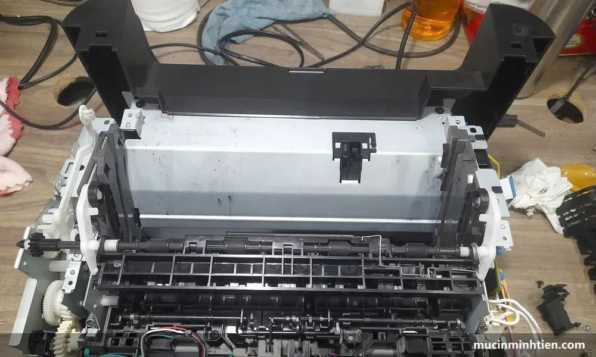

Hướng dẫn sửa lỗi & sử dụng máy in
Các bài viết do kỹ thuật viên Mực In Minh Tiến biên soạn từ lỗi thực tế gặp hằng ngày. Làm theo từng bước tại nhà — nếu vẫn chưa xử lý được, gọi 0915 510 203 để được hỗ trợ tận nơi.

Máy của bạn có lỗi riêng theo dòng? Xem thêm mục lỗi máy in theo từng model — tách riêng cho HP, Canon, Brother, Epson.
Máy in bị sọc ngang: 6 nguyên nhân và cách khắc phục
Đo khoảng cách giữa hai vệt là ra đúng bộ phận hỏng — bảng đối chiếu chu kỳ lặp của từng trục.
Đọc bài viết →Máy in bị sọc trắng dọc: 6 nguyên nhân và cách xử lý
Đây là lỗi mất mực chứ không phải thừa mực. Một phép thử hai phút tách lỗi hộp mực khỏi lỗi cụm quang.
Đọc bài viết →Máy in bị sọc trắng ngang: xử lý theo từng loại máy
Máy phun là tắc đầu phun, laser là mất tiếp xúc, máy bill là đầu nhiệt bẩn — ba bệnh khác hẳn nhau.
Đọc bài viết →Sửa máy in nhiệt: lỗi nào sửa được, lỗi nào nên thay
Máy in bill chỉ có năm bộ phận hay hỏng. Tuổi thọ từng cái và ngưỡng nên thay máy thay vì sửa tiếp.
Đọc bài viết →Máy in nhiệt in mờ, chữ nhạt: 7 nguyên nhân và cách sửa
Máy in bill không có mực để mà hết. Năm trong bảy nguyên nhân tự xử lý được trong mười phút.
Đọc bài viết →Máy in nhiệt khổ A5 in đơn hàng: chọn máy và xử lý lỗi
Nhả giấy trắng liên tục, in tràn hai tờ, mã vạch không quét được — phần lớn là lỗi cài đặt.
Đọc bài viết →Giấy in nhiệt khổ 57mm hay 80mm: chọn đúng cho máy bill
Ký hiệu 80x45 nghĩa là gì, một cuộn in được bao nhiêu bill, và vì sao giấy rẻ làm hỏng đầu in.
Đọc bài viết →Máy in bill, in nhiệt không in được: 8 nguyên nhân
Máy in nhiệt không dùng mực nên nguyên nhân khác hẳn máy laser. Self-test tách lỗi trong 30 giây.
Đọc bài viết →Máy in không kéo giấy: 6 nguyên nhân và cách khắc phục
Máy kêu mà giấy nằm im là quả đào chai. Máy im lặng báo hết giấy lại là chuyện khác.
Đọc bài viết →Máy in bị lem mực: 6 nguyên nhân và cách khắc phục
Chạm tay là dính mực thì lỗi cụm sấy, mực khô không dính thì lỗi gạt mực. Phép thử mười giây.
Đọc bài viết →Máy in ra giấy trắng: 7 nguyên nhân và cách khắc phục
Phân biệt trắng hoàn toàn, trắng cách trang và trắng một phần — ba kiểu ứng với ba bộ phận khác nhau.
Đọc bài viết →Cách in 2 mặt trên máy in: Canon, HP, Brother, Epson
In 2 mặt tự động và lật giấy thủ công đúng chiều — không còn cảnh in ngược đầu, lệch trang.
Đọc bài viết →Cách vệ sinh đầu phun máy in Epson hết sọc, mất màu
Nozzle Check, Head Cleaning, Power Ink Flushing — thứ tự đúng để tốn ít mực nhất.
Đọc bài viết →Cách reset máy in HP và lỗi chấm than HP 107a, 107w
Reset khi máy treo, đọc đèn chấm than và chuyện chip hộp mực W1107A sau khi nạp mực.
Đọc bài viết →Máy in bị sọc đen dọc: 5 nguyên nhân và cách khắc phục
Nhìn hình dạng vệt sọc đoán đúng bệnh: drum xước, gạt mòn hay mực vón — tự xử lý trước khi gọi thợ.
Đọc bài viết →Lỗi Drum End Soon máy in Brother và cách reset drum
Drum End Soon có phải lỗi không, in tiếp được không, reset drum DCP-B7535DW, HL-L5100DN.
Đọc bài viết →Cách reset máy in Brother báo hết mực và reset drum
Máy Brother báo "Replace Toner" dù vừa nạp mực? Các bước reset bộ đếm cho dòng HL, DCP, MFC.
Đọc bài viết →Lỗi 5B00 máy in Canon: nguyên nhân và cách xử lý
5B00 là tràn bộ đếm mực thải — máy không hỏng. Cách xử lý cho iX6770, G3000, G2010.
Đọc bài viết →Canon 2900 không nhận hộp mực: 5 cách xử lý nhanh
Lắp lại đúng ray, vệ sinh tiếp điểm, kiểm tra lẫy nắp — và dấu hiệu lỗi card formatter.
Đọc bài viết →Máy in Epson báo lỗi 2 đèn đỏ nhấp nháy: cách xử lý
Đèn giấy và đèn mực cùng nháy đỏ trên L1210, L3110, L3250? Đọc tín hiệu đèn và xử lý từng trường hợp.
Đọc bài viết →Tràn bộ đếm mực thải Epson: resetter và cách reset an toàn
Resetter là gì, rủi ro bản trôi nổi, và vì sao reset phải kèm vệ sinh tấm thấm mực thải.
Đọc bài viết →Máy in không in được, báo Offline: 7 bước khắc phục
Hàng đợi kẹt, Print Spooler treo, Use Printer Offline, IP đổi — xử lý theo đúng thứ tự là ra bệnh.
Đọc bài viết →Cách cài đặt máy in vào máy tính: USB, WiFi, mạng LAN
Cài driver và thêm máy in trên Windows 10/11 theo cả ba cách kết nối, kèm xử lý máy tính không nhận máy in.
Đọc bài viết →Cách chọn mực in đúng máy, bền máy, tiết kiệm chi phí
Chính hãng, tương thích hay nạp lại? Cách tra đúng mã mực và tính chi phí trên mỗi trang in.
Đọc bài viết →Phân biệt mực in chính hãng và mực trôi nổi
6 dấu hiệu kỹ thuật viên dùng hằng ngày: tem chống giả, seal, trọng lượng, bản in đầu tiên…
Đọc bài viết →